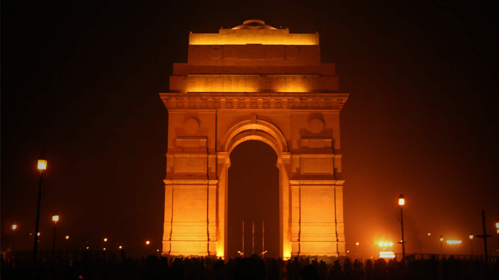
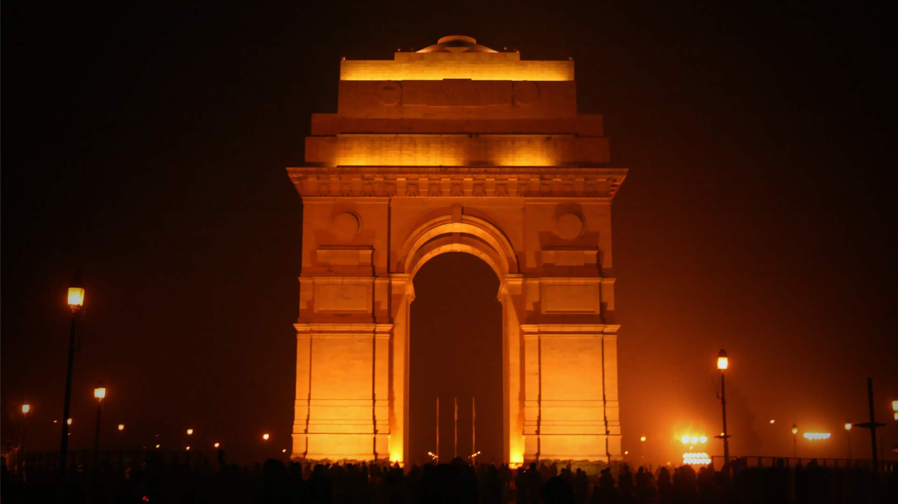

| |
Home | History | Destinations | Art and Culture | National Campaign | Contact Us |
|---|

India is one of the oldest civilizations in the world with a kaleidoscopic variety and rich cultural heritage. It has achieved all-round socio-economic progress during the last 65 years of its Independence. India has become self-sufficient in agricultural production and is now one of the top industrialized countries in the world and one of the few nations to have gone into outer space to conquer nature for the benefit of the people. It covers an area of 32, 87,263 sq. km, extending from the snow-covered Himalayan heights to the tropical rain forests of the south. As the 7th largest country in the world, India stands apart from the rest of Asia, marked off as it is by mountains and the sea, which give the country a distinct geographical entity. Bounded by the Great Himalayas in the north, it stretches southwards and at the Tropic of Cancer, tapers off into the Indian Ocean between the Bay of Bengal on the east and the Arabian Sea on the west. As you travel, India offers a range of vast tourism choices, diverse in land and nature, people, tribes, cuisine, faiths, dance forms, music, arts, crafts, adventure, sport, spirituality, history; even these vary as you journey from one state to another. As a country, India has achieved all-round socio-economic progress in the last 70 years of independence. The change is clearly visible in the Tier I and Tier II cities. However, the fascinating aspect lies in the stark difference as you travel through the new and old parts of its cities. From world-class airports and hotels, luxurious shopping malls, restaurants, pubs and cafes to overcrowded streets and alleyways, in the same cities, filled with thousands of little shops offering every possible modern and ethnic product and native street food is a fascinating experience.
 
